2022
-
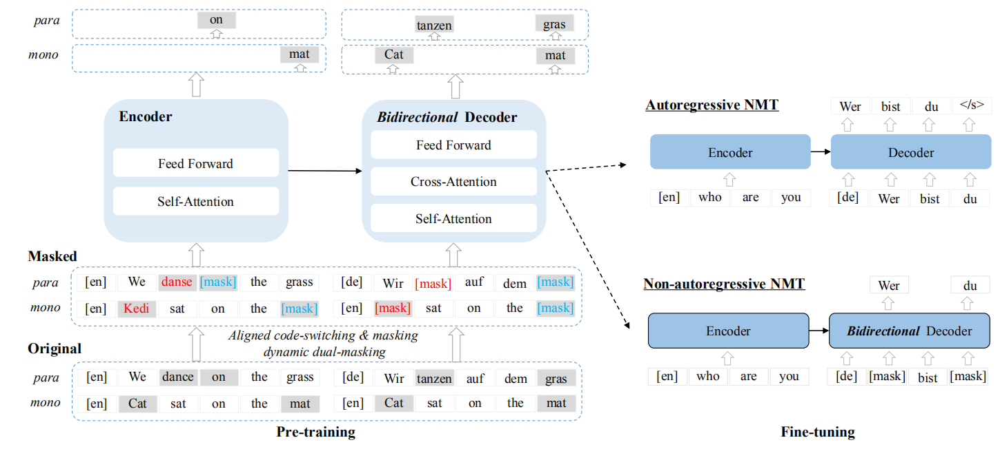
CeMAT
CeMAT stands for “ Conditional masked language pretraining model for Machine Translation” which is a bidirectional encoder and a bidirectional decoder multilingual Transformer model with a cross-attention module for bridging them. CeMAT was proposed by Huawei Noah’s Ark Lab in 2022 and published in their paper: Universal Conditional Masked Language Pre-training for Neural Machine Translation. The official code for this paper can be found in Huawei Noah’s Ark Lab official GitHub repository: huawei-noah/CeMAT. …
2021
-
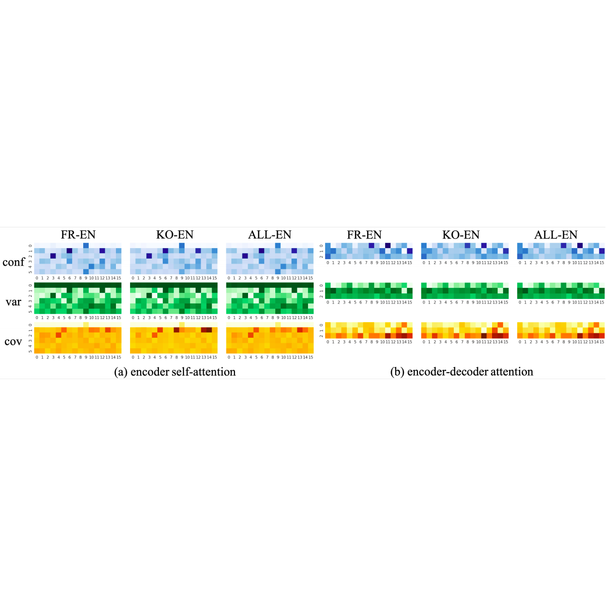
Multilinguality in Transformers
The following paper: Do Multilingual Neural Machine Translation Models Contain Language Pair Specific Attention Heads? asks a very good question. To answer it, the publishers tried to measure the importance of the self-attention heads in the encoder and the encoder-decoder attention heads of a many-to-one transformer. The NMT model was able to translate French, German, Italian, Spanish, and Korean sentences to English. It uses a variant of the Transformer-Big architecture with a shallower decoder: 16 attention heads, 6 encoder layers, and 3 decoder layers on TED2020 dataset. …
-
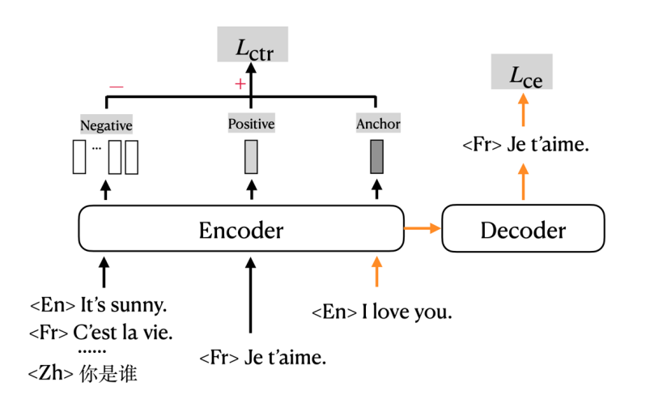
mRASP2
mRASP2 stands for “multilingual Random Aligned Substitution Pre-training”. It’s mRASP2 because it’s an extension to the mRASP model proposed by the same lab (ByteDance AI Lab) a year earlier. mRASP2 framework was proposed in 2021 and published in this paper: Contrastive Learning for Many-to-many Multilingual Neural Machine Translation. The official code for this paper can be found in this GitHub repository: mRASP2. …
2020
-
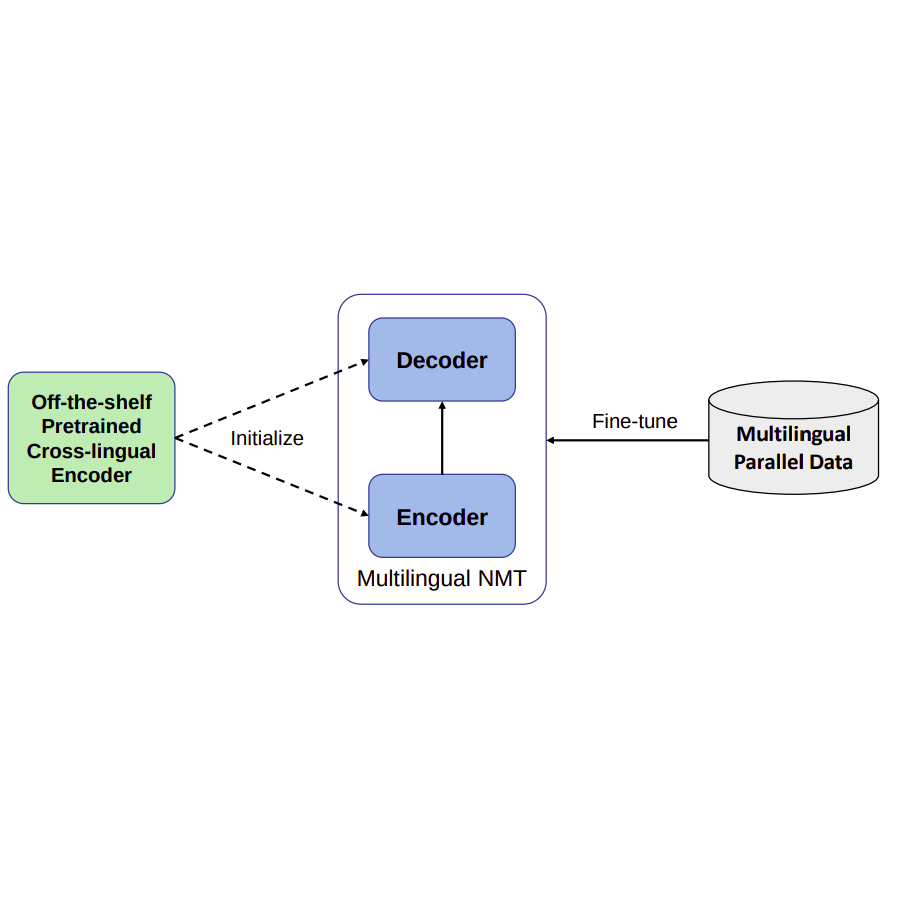
XLM-T
XLM-T stands for “Cross-lingual Language Modeling-Transformer” which is a multi-lingual machine translation model proposed by Microsoft in 2020 and published in their paper: XLM-T: Scaling up Multilingual Machine Translation with Pretrained Cross-lingual Transformer Encoders. The official code of this paper can be found in Microsoft’s official GitHub repository: unilm/xlmt. Most existing MNMTs adopt a randomly initialized Transformer backbone. In this work, the researchers used an a pre-trained cross-lingual Transformer encoder such as (XLM or XLM-R) to initialize both the encoder and decoder of the multilingual NMT model, and then fine-tuned it with multilingual parallel data. …
-
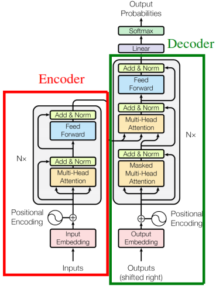
M2M-100
M2M stands for “Many-to-Many” which is a multilingual NMT model using many-to-many datasets. The model was created by Facebook AI in 2020 and published in their paper: “Beyond English-Centric Multilingual Machine Translation”. The official code for this paper can be found on the official FairSeq repository: m2m_100 …
-
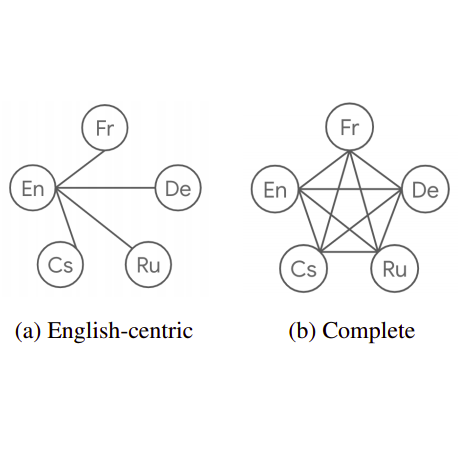
cMNMT: Complete MNMT
cMNMT stands for “Complete Multilingual Neural Machine Translation” which is a multilingual NMT model proposed by Google Research in 2020 and published in their paper: “Complete Multilingual Neural Machine Translation”. Multilingual Neural Machine Translation models are called complete when they are trained for all possible source-target pairs. The following figure shows the difference between the data of an English-Centric MNMT (left) and a complete MNMT (right) on a six-languages dataset: …
-
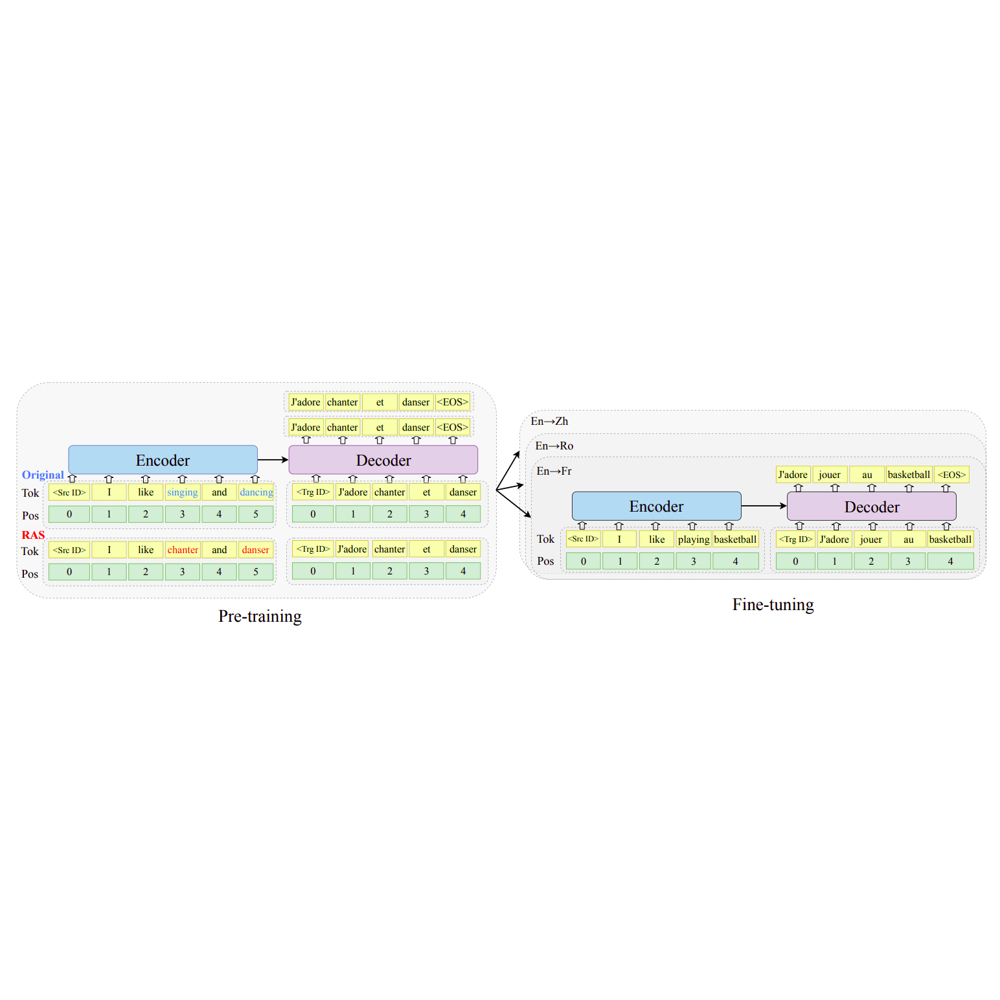
mRASP
mRASP stands for “multilingual Random Aligned Substitution Pre-training” which is a pre-training method for multilingual NMT models proposed by ByteDance AI Lab in 2020 and published in their paper: “Pre-training Multilingual Neural Machine Translation by Leveraging Alignment Information”. The official code for this paper can be found on this GitHub repository: mRASP. …
-
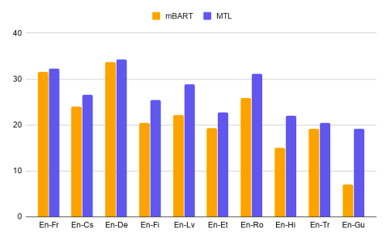
MTL: Multi-task Learning
MTL stands for “Multi-task Learning” and it is a framework that jointly trains multilingual neural machine translation (MNMT) models on bitext data and monolingual data. The bitext data is used for the translation task while the monolingual data is used for the denoising language modeling tasks. This framework was proposed by Microsoft in 2020 and published in their paper: Multi-task Learning for Multilingual Neural Machine Translation. …
-
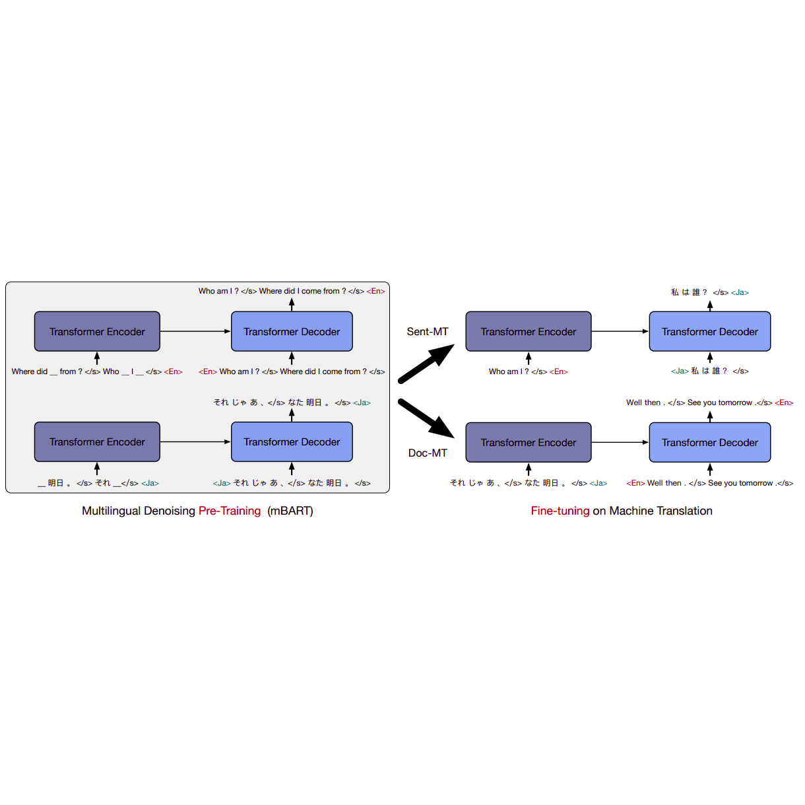
mBART-50
In this part, we are going to discuss this paper: Multilingual Translation with Extensible Multilingual Pretraining and Finetuning (the official code: mbart) which doubles the number of languages in mBART to suppor multilingual machine translation models of 50 languages without loss of performance. Also, This paper tried to fix some of the issues found in mBART such as: …
-
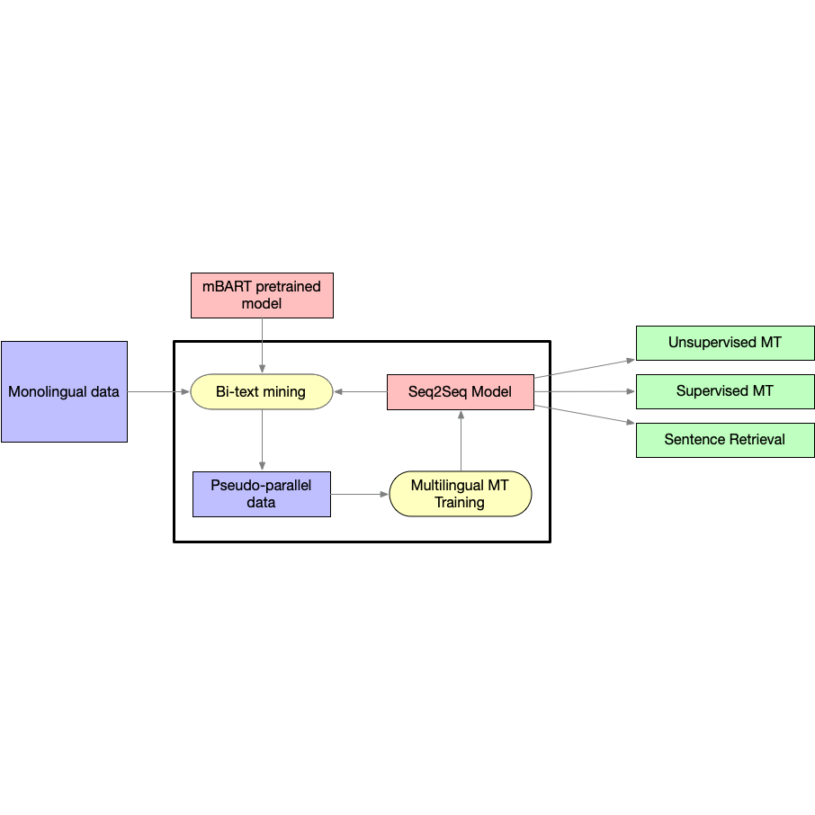
CRISS
CRISS stands for “Cross-lingual Retrieval for Iterative Self-Supervised Training” which was created by FacebookAI in 2020 and published in this paper: “Cross-lingual Retrieval for Iterative Self-Supervised Training. The official code for this paper can be found in the fairseq GitHub repository: criss. …
-

mBART
mBART stands for “Multilingual Bidirectional Auto-regressive Transformer” which is a multilingual NMT model proposed by FacebookAI in 2020 and published in their paper: “Multilingual Denoising Pre-training for Neural Machine Translation”. The official code for this paper can be found in the fairseq GitHub repository: mbart. mBART is the first method for pre-training a complete sequence-to-sequence model by denoising full texts in multiple monolingual data, while previous approaches have focused only on the encoder/decoder. …
2019
-
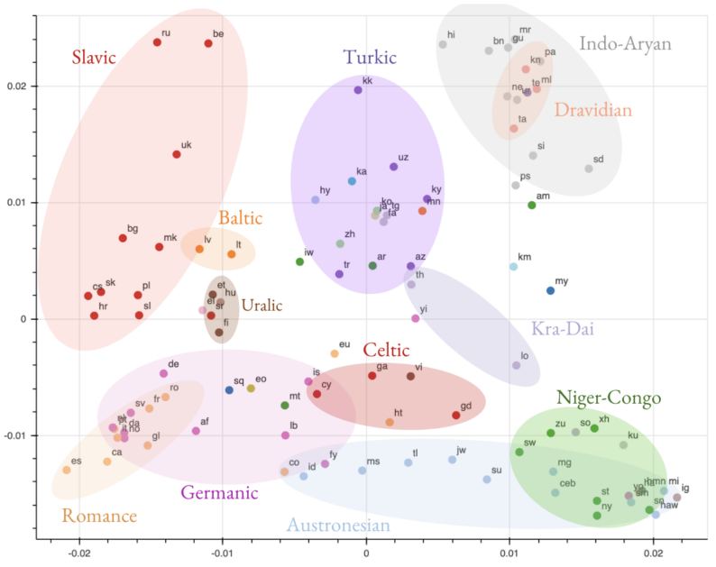
Analyzing M4 using SVCCA
Multilingual Neural Machine Translation (MNMT) models have yielded large empirical success in transfer learning settings. However, these black-box representations are poorly understood, and their mode of transfer remains elusive. This paper “Investigating Multilingual NMT Representations at Scale” published by Google in 2019 attempted to understand MNMT representations (specifically Google’s M4 model) using Singular Value Canonical Correlation Analysis (SVCCA). Google’s unofficial code for the SVCCA framework can be found on their official GitHub repository: google/svcca. …
-
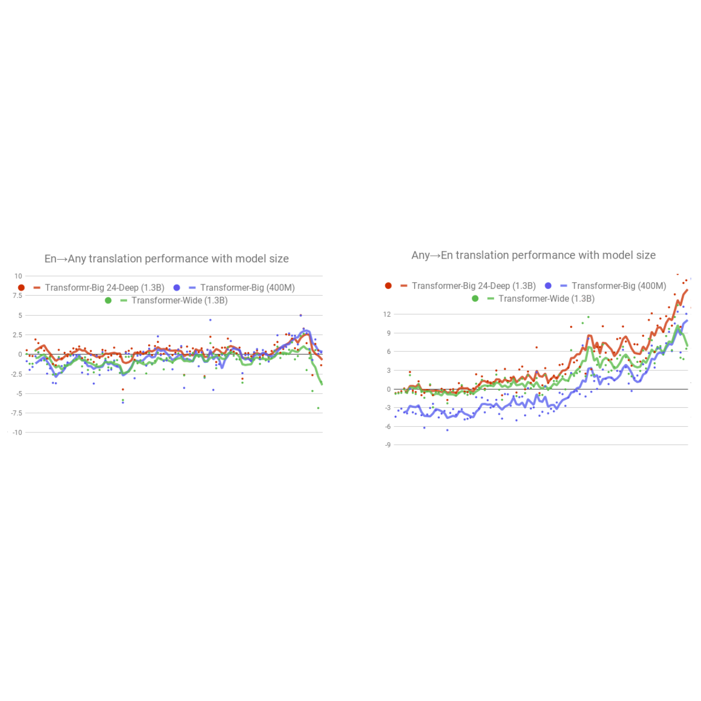
Google's M4 Model
M4 stands for “Massively Multilingual, Massive Machine Translation” which is a multilingual NMT model that is trained on over 25 billion parallel sentences in 103 languages. This model was proposed by Google AI in 2019 and published in their paper: Massively Multilingual Neural Machine Translation in the Wild: Findings and Challenges. …
-
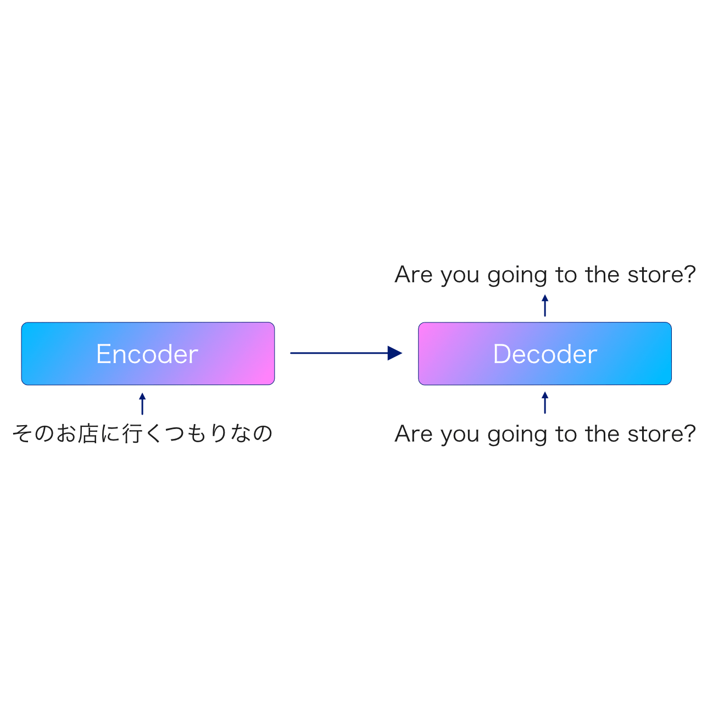
Massively MNMT
Massively MNMT is a multilingual many-to-many NMT model proposed by Google Research in 2019 and published in their paper: Massively Multilingual Neural Machine Translation. Massively MNMT is a standard Base-Transformer with 6 layers in both the encoder and the decoder. To enable many-to-many translation, the authors added a target-language prefix token to each source sentence. …
2016
-
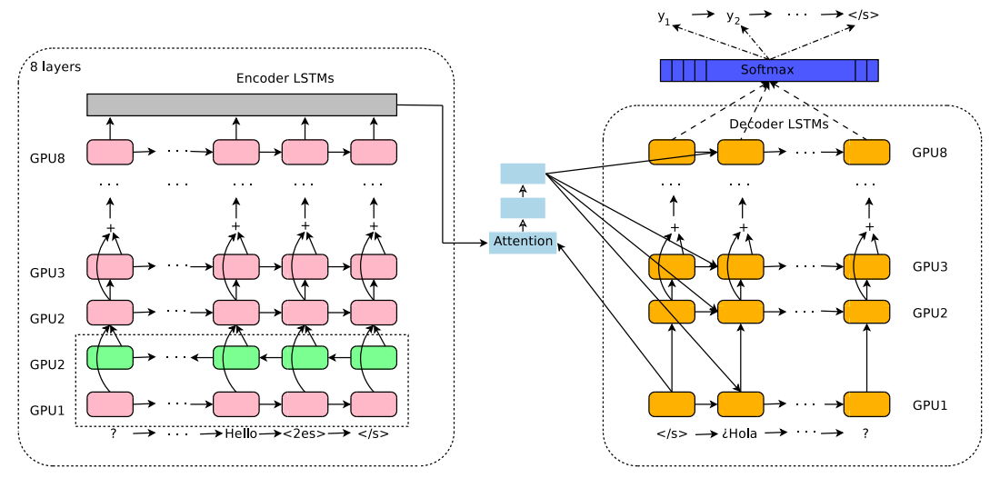
Multilingual Google's NMT
GNMT stands for “Google Neural Machine Translation” which is a bilingual machine translation architecture that was discussed before in this post: GNMT. Here, we are going to discuss how they extended the bilingual nature of the GNMT model to be multilingual. The Multilingual GNMT architecture, as seen in the following figure, was proposed in 2016 by the Google Research team and published in this paper: Google’s Multilingual Neural Machine Translation System: Enabling Zero-Shot Translation. The official code for this paper can be found in the TensorFlow’s official GitHub repository: TensorFlow/GNMT. …